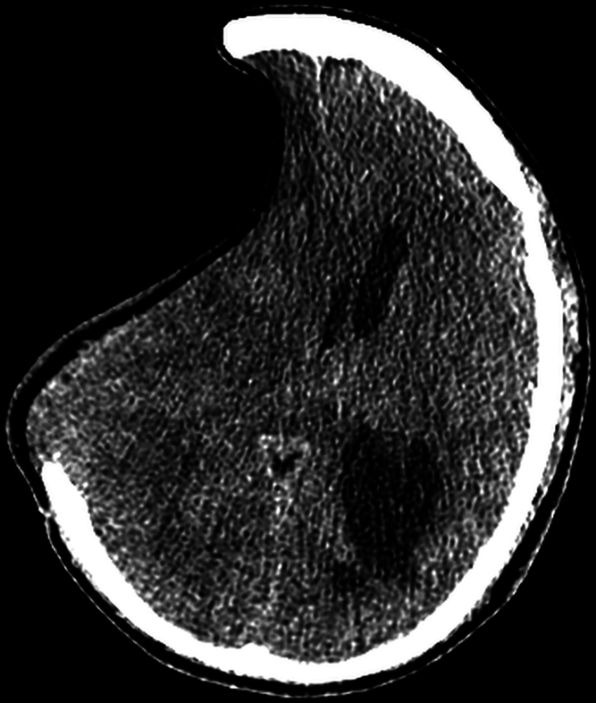
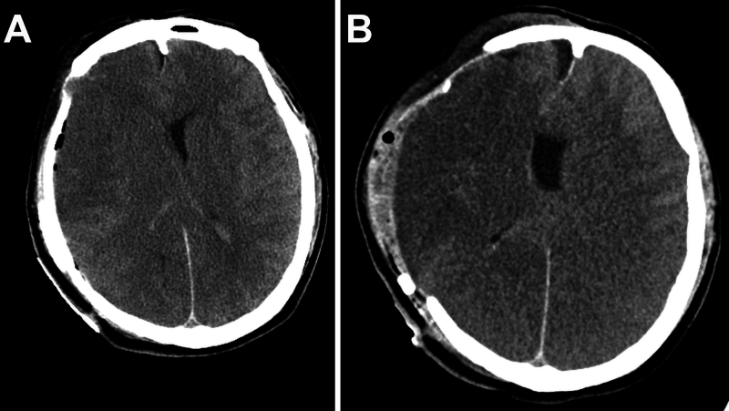
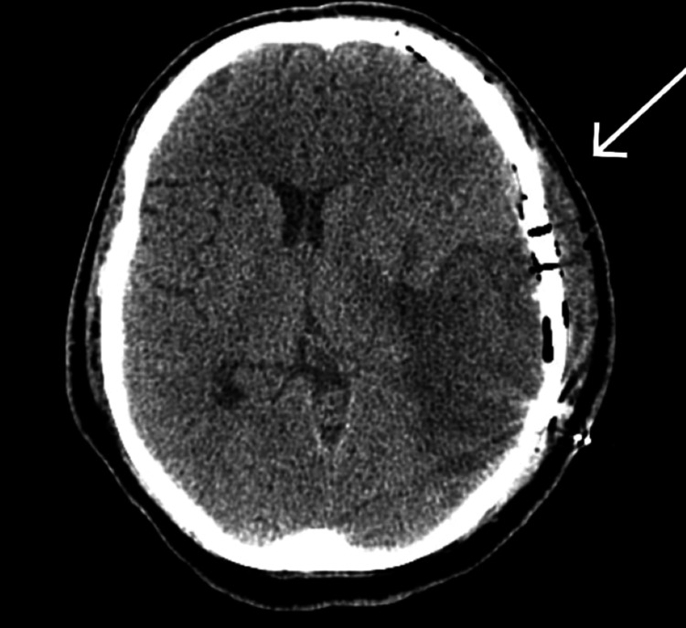
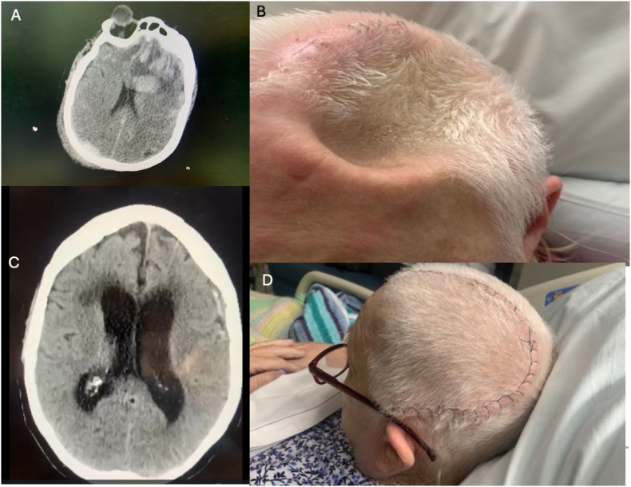

3028 — Vá sọ sau mở sọ giảm áp: thời điểm, vật liệu, phù não ác tính sau vá (MBSC) và hội chứng nắp sọ lún
Tags: pattern:nap-so-lun pattern:di-lech-duong-giua pattern:phu-nao-lan-toa pattern:tieu-xuong-manh-ghep vung:nao vung:hop-so score:Oulu-resorption protocol:CT-so-nao-khong-can-quang protocol:MRI-sau-va-so incidentaloma:manh-ghep-xuong
Mức chắc chắn (certainty): tổng hợp y văn (literature synthesis) — ghép báo cáo ca MBSC/SSFS có tổng quan hệ thống các ca đã báo cáo (Cureus 2026, PMCID PMC13072451), tổng quan cơ chế – chẩn đoán hội chứng trephined (Brain & Spine 2026, PMC13471285), ca hội chứng nắp sọ lún được vá sọ sớm (Cureus 2025, PMC12009460), 3 phân tích gộp về thời điểm vá sọ (Neurosurg Rev 2026, PMC12789150 và PMC13246589; J Clin Med 2025, PMC12194293), phân tích gộp nhi (Acta Neurochir 2025, PMC12356755), nghiên cứu cắt ngang thời điểm bằng CART (Neurosurg Rev 2026, PMC12764505), phân độ tiêu xương theo thang Oulu (Neurosurg Rev 2026, PMC13633375) và mạng lưới so sánh vật liệu (Med Sci Monit 2026, PMC12988648; Bioengineering 2026, PMC13203544). Nhiều thiết kế quan sát, mâu thuẫn nhau ở điểm kết cục thần kinh → ghi rõ chỗ chưa đồng thuận, không gắn nhãn ca nguyên văn.
Câu hỏi thực hành: bệnh nhân 42 tuổi, 5 tháng sau mở sọ giảm áp vì máu tụ nội sọ, tỉnh táo nhưng nắp sọ lún sâu, CT có lệch đường giữa 15 mm về phía ổ khuyết. Câu hỏi không phải "có vá sọ không" (câu trả lời là có) mà là: vá bây giờ hay chờ, bằng vật liệu gì, và chuẩn bị gì cho biến chứng nguy hiểm nhất — phù não ác tính ngay trong giờ đầu sau vá. Bài chốt theo ba trục: (1) hướng lệch và mức lún nói gì về áp lực nội sọ; (2) thời điểm — mốc 90 ngày cho chức năng, mốc ~122 ngày cho biến chứng, và vùng nguy hiểm < 30 ngày; (3) vật liệu — đánh đổi giữa tiêu xương (xương tự thân) và nhiễm/lộ mảnh ghép (vật liệu tổng hợp). Nối 3026 – Tụt não nghịch lý sau chọc dò, 212 – Xuất huyết sọ, 201 – Protocol CT/MRI sọ não, 224 – Chấn thương sọ não nhi, 3002 – Shunt não thất–màng phổi & nắp sọ lún.
1. Tổng quan bệnh học – cơ chế hình ảnh: vì sao nắp sọ LÚN và vì sao vá sọ có thể giết bệnh nhân
- Bối cảnh: mở sọ giảm áp (decompressive craniectomy — DC) bỏ một mảng xương để não thoát ra ngoài khi tăng áp lực nội sọ kháng trị; vá sọ (cranioplasty — CP) phục hồi vòm sọ kín. CP là phẫu thuật "ngoài màng cứng" nhưng hậu quả nằm trong màng cứng — đây chính là điểm khiến nó nguy hiểm.
- TẠI SAO nắp sọ lún (hội chứng trephined / sinking skin flap syndrome — SSFS/SoT): sau DC, nhu mô não không còn bị vòm sọ giữ, chịu áp lực khí quyển trực tiếp; khi dịch não tủy bị lấy bớt (dẫn lưu, shunt) hoặc não teo lại, chênh áp xuyên màng cứng trở nên âm → não bị hút ra phía ổ khuyết và da đầu lõm vào. Hệ quả sinh lý: giảm tưới máu não, rối loạn dòng dịch não tủy, rối loạn tự điều hoà → chậm chạp, giảm tập trung, yếu nửa người, đau đầu thế đứng.
- Trên CT, dấu hiệu là HÌNH HỌC: đường viền da đầu lõm tại ổ khuyết, nhu mô não kéo về phía ổ khuyết, lệch đường giữa VỀ PHÍA khuyết, bể đáy căng, não thất bên bên khuyết nhỏ hơn. Lệch về phía khuyết = hạ áp lực; lệch ra xa khuyết = tăng áp lực — đây là quy tắc đọc nhanh quan trọng nhất (đã chốt ở 3026).
- TẠI SAO vá sọ có thể gây phù não ác tính (massive brain swelling after cranioplasty — MBSC): khi vòm sọ được đóng kín, áp lực khí quyển không còn đè lên não; đồng thời tưới máu não tăng, dòng dịch não tủy phục hồi, bệnh nhân nằm ngửa → áp lực nội sọ tăng đột ngột. Với một bộ não đã thích nghi với áp lực nội sọ thấp và độ giãn kém (nắp lún nặng + lệch đường giữa), mức áp lực "bình thường" của người khoẻ lại là quá cao — tác giả gọi là "tăng áp lực nội sọ giả" (pseudointracranial hypertension). Kết quả: phù lan tỏa hai bán cầu ± hố sau, mất phân biệt chất xám–trắng, tụt hạnh nhân, có thể kèm xuất huyết nhỏ.
- Trên CT, phù là GIẢM tỷ trọng vì mô phù chứa nhiều nước (giảm trọng lượng nguyên tử trung bình) → lan theo chất trắng, xoá rãnh, xoá phân biệt vỏ–tuỷ; khác nhồi máu ở chỗ không tôn trọng một vùng mạch máu và không hạn chế khuếch tán trên DWI.
- Ngưỡng định lượng và tỷ lệ:
- SSFS gặp ở 13% bệnh nhân sau DC, khởi phát 28–188 ngày sau mổ; có thể sớm trong 2 tuần (PMC12009460).
- MBSC: 43 ca đã báo cáo tính đến 2026; chỉ 8 ca sống (18,6%) và chỉ 2 ca hồi phục đáng kể ngoài di chứng nặng, phần lớn diễn tiến trong vài giờ đầu sau vá (PMC13072451).
- Biến chứng chung của vá sọ: 25–50%, so với 1–5% của phẫu thuật thần kinh thường quy (PMC12988648); loạt 754 ca vá sọ trong 10,75 năm: 24,6% có ≥ 1 biến chứng — nhiễm phải tháo mảnh ghép 6,6%, não úng thủy phải đặt shunt 9,0%, tiêu xương phải thay vật liệu 6,3%, co giật 4,1%, máu tụ phải mổ lại 2,3% (PMC13072451).
- Hiệu quả thần kinh của vá sọ: 65% bệnh nhân SoT cải thiện rõ trong 4 ngày đầu sau vá, duy trì đến 90 ngày (PMC13471285); gộp 21 nghiên cứu / 1.682 bệnh nhân, vá sọ cải thiện chức năng so với trước mổ (SMD 0,52; 0,21–0,83) và nhận thức MMSE (SMD 0,57; 0,34–0,79) (PMC13246589).
- TẠI SAO xương tự thân bị TIÊU (bone flap resorption — BFR): mảnh xương sau DC mất nguồn nuôi từ màng xương và cân, bị huỷ cốt bào thay dần; trên CT thấy mỏng dần bờ mảnh ghép, khuyết kiểu "gặm nhấm", hở đường khớp rộng ra, không có phản ứng màng xương, không ngấm thuốc (khác nhiễm trùng). Nguy cơ tăng khi diện khuyết > 92,11 cm², chấn thương sọ não, hút thuốc, mảnh ghép ≥ 2; < 2 mảnh là yếu tố bảo vệ (PMC13633375). Ở trẻ, tiêu xương phải mổ lại ~30%, nhiễm ~10% (PMC12356755).
2. Mẫu hình + chẩn đoán phân biệt theo thời gian và theo hướng nắp sọ (gamut)
- Trục 1 — THỜI GIAN sau vá sọ (quyết định gamut):
- < 24 giờ: MBSC (phù não ác tính) · máu tụ ngoài/dưới màng cứng cấp · co giật sớm · tăng áp lực do khí nội sọ.
- 1–4 tuần: nhiễm mảnh ghép/dịch tụ · hygroma · rò dịch não tủy · máu tụ muộn.
- > 1 tháng: tiêu xương mảnh ghép · não úng thủy sau vá (đặc biệt khi vá đồng thời với shunt) · lộ mảnh ghép · SSFS tồn tại/diễn tiến dù đã vá.
- Trục 2 — HƯỚNG NẮP SỌ: lõm = hạ áp lực/SSFS hoặc dẫn lưu quá mức; căng phồng = tăng áp lực, máu tụ, phù, hoặc não phòi ra qua ổ khuyết.
- Gợi nhớ "SUNK" (đúng nghĩa "lún"): Sinking skin flap (SSFS/SoT) · Ung thủy (não úng thủy sau vá) · Nhiễm mảnh ghép · Khuyết xương = tiêu xương mảnh ghép.
- Gamut theo vị trí tổn thương trên CT:
- Ngoài trục (extra-axial): máu tụ ngoài màng cứng/dưới màng cứng cấp, hygroma, dịch tụ dưới cân (subgaleal), khí ngoài màng cứng.
- Trong trục (intra-axial): phù não lan tỏa (MBSC), ổ giảm tỷ trọng do nhồi máu, ổ tăng tỷ trọng do xuất huyết mới, ổ mủ (áp-xe).
- Tại mảnh ghép: tiêu xương (mỏng bờ), di lệch/lún mảnh ghép, lộ mảnh ghép qua da, vỡ dụng cụ cố định.
- Điểm phân biệt then chốt: nắp lún + lệch về phía khuyết không phải "não úng thủy" — đặt shunt cho bệnh nhân này sẽ làm lún sâu hơn và có thể gây tụt não nghịch lý (xem 3026).
3. Bảng so sánh phân biệt (ma trận đối chiếu)
| Thực thể (entity) | Hình ảnh điển hình | Chốt vào (rule-in) | Chốt loại (rule-out) | Gợi ý xác nhận |
|---|---|---|---|---|
| SSFS / hội chứng trephined (SoT) | Nắp da đầu lõm sâu tại ổ khuyết, não kéo về khuyết, lệch đường giữa VỀ PHÍA khuyết, não thất bên khuyết nhỏ hơn | Lún da đầu nhìn thấy + lệch về phía khuyết + xấu đi thần kinh không do tổn thương mới, đỡ khi nằm ngửa | Có tổn thương mới (máu tụ, nhồi máu, áp-xe) giải thích được triệu chứng → không quy cho SSFS | CT 1 mm; so phim cũ; đáp ứng sau vá sọ |
| MBSC (phù não ác tính sau vá) | Phù lan tỏa hai bán cầu ± hố sau, mất phân biệt xám–trắng, rãnh xoá, có thể kèm xuất huyết nhỏ; xuất hiện trong vài giờ sau vá | SSFS nặng trước mổ (lệch ≥ 15 mm) + suy thần kinh/co giật ngay sau vá + phù không tôn trọng vùng mạch | Phù khu trú đúng một vùng mạch máu + DWI hạn chế → nhồi máu, không phải MBSC | CT cấp; CTA/CTV loại trừ tắc mạch – huyết khối xoang; mổ lại giải ép nếu xấu |
| Nhiễm mảnh ghép | Dịch tụ quanh mảnh ghép, khí trong mô mềm, ngấm thuốc viền, tiêu xương không đều, lộ chỉ/mảnh ghép | Sốt + sưng nóng vết mổ + dịch đục, cấy (+) | Không sốt, không ngấm thuốc, chỉ mỏng xương đều → tiêu xương vô khuẩn | MRI có tương phản; cấy dịch/mô; đánh dấu (PET) khi mạn tính |
| Tiêu xương mảnh ghép (BFR) | Mỏng dần bờ mảnh ghép, khuyết kiểu bị gặm, hở khớp rộng, lún mảnh ghép; thường > 3 tháng | Mảnh ghép mỏng/hỏng tiến triển trên ≥ 2 lần CT + diện khuyết > 92,11 cm² + TBI/hút thuốc | Mảnh ghép mất hoàn toàn kèm tụ dịch và sốt → nhiễm trùng | Thang Oulu (nhẹ/trung gian/nặng); CT xương lát mỏng |
| Não úng thủy sau vá | Não thủy giãn tiến triển, thùy thái dương giãn, rãnh vỏ căng, túi cùng góc cầu–tiểu não rộng | Não thất giãn tiến triển + tam chứng (đi, tiểu, nhận thức) hoặc giảm tri giác | Não thất giãn nhưng rãnh vỏ giãn theo, không lệch, không triệu chứng → giãn do teo (hydrocephalus ex vacuo) | CT/MRI so sánh; nghiệm pháp lấy dịch/tháo shunt thắt lưng |
| Máu tụ ngoài/dưới màng cứng cấp sau vá | Khối tăng tỷ trọng hình liềm/thấu kính dưới vòm sọ mới, đẩy lệch đường giữa | Đau đầu dữ dội + suy tri giác trong 24 giờ đầu | Dải giảm tỷ trọng đối xứng hai bên, không đẩy lệch → dịch tồn dư | CT cấp; đo độ dày (mm) và lệch đường giữa (mm) |
| Rò dịch não tủy / pseudomeningocele | Tụ dịch dưới cân, đồng tỷ trọng dịch não tủy, có thể thông với khoang dưới nhện, căng phồng khi ho | Chảy dịch trong vết mổ + beta-2 transferrin (+) | Dịch tụ không thông, không tăng khi ho, tự xẹp → tụ dịch đơn thuần | MRI T2/CT cisternography khi cần; beta-2 transferrin |

CT sọ không cản quang: nắp sọ lún nặng — da đầu lõm sâu tại ổ khuyết, nhu mô não kéo về phía khuyết, lệch đường giữa 15 mm. Đây là kiểu hình có độ giãn kém nhất và là bối cảnh nguy cơ cao của MBSC khi vòm sọ được đóng lại. Nguồn: Cureus 2026 (PMC13072451), Figure 2, CC BY-NC-ND 4.0 — nguyên bản, không crop.Ba dấu hiệu "đắt giá" trên CT trước và sau vá sọ — đọc đúng để không ra quyết định sai
- Hướng của lệch đường giữa. Đo tại lỗ Monro (hoặc tại mức não thất bên rộng nhất). Lệch về phía ổ khuyết = hạ áp lực (SSFS, dẫn lưu quá mức); lệch ra xa ổ khuyết = tăng áp lực (máu tụ, phù, não úng thủy). Không ghi "lệch 15 mm" mà bỏ hướng — hướng là chẩn đoán.
- Mức lún và diện khuyết. Đo chỗ lún sâu nhất (mm) và diện tích khuyết sọ (cm²). Diện khuyết > 92,11 cm² là yếu tố nguy cơ độc lập của tiêu xương mảnh ghép (PMC13633375); khuyết lớn cũng là yếu tố được dùng trong các thang phân tầng nguy cơ SoT.
- Phù có "tôn trọng vùng mạch" hay không. Phù lan tỏa, hai bên, không theo một vùng mạch, không hạn chế khuếch tán = MBSC/hyperemia; phù khu trú đúng lãnh thổ động mạch + DWI hạn chế = nhồi máu. Phân biệt này quyết định mổ lại giải ép hay không.

(A) CT sau vá bằng mảnh PEEK đặt riêng: phù lan tỏa trên lều, xoá rãnh và mất phân biệt xám–trắng, kèm ổ xuất huyết vỏ não 8 mL. (B) Sau khi tháo mảnh ghép và lấy máu tụ, phù vẫn nặng thêm trong vài giờ — minh hoạ rằng khi dòng thác MBSC đã bùng phát thì giải ép muộn thường không cứu được. Nguồn: Cureus 2026 (PMC13072451), Figure 3, CC BY-NC-ND 4.0 — nguyên bản, không crop.4. Protocol chụp + thời điểm + vật liệu (hệ phân độ)
4.1 Protocol hình ảnh
- Trước vá sọ: CT sọ không cản quang, lát 1 mm, cửa sổ xương + nhu mô — đo diện tích khuyết (cm²), mức lún (mm), lệch đường giữa (mm, ghi hướng), kích thước não thất, loại trừ hygroma/tụ dịch, đánh giá mảnh xương tự thân (nếu còn) bằng thang Oulu. Thêm CTA/CTV khi nghi huyết khối xoang hoặc bất thường mạch.
- Ngay sau vá sọ: không chụp thường quy nếu bệnh nhân tỉnh táo, không dấu hiệu thần kinh; chụp NGAY khi co giật, giãn đồng tử, giảm tri giác, thở máy khó — và chụp trong vòng phút, không chờ.
- MRI (khi cần phân định): DWI/ADC (nhồi máu vs phù vận mạch), SWI/T2* (máu cũ, hemosiderin), FLAIR (phù), T1 sau tiêm (áp-xe/lộ mảnh ghép). Không dùng MRI thay CT cấp ở bệnh nhân mất ổn định.
- Theo dõi sau vá: theo dõi ICP nếu còn đầu dò; khám thần kinh mỗi giờ trong 24 giờ đầu; theo dõi dịch dẫn lưu dưới cân (dẫn lưu hút có thể góp phần vào rối loạn áp lực — chưa có bằng chứng nhân quả, xem mục 5).
4.2 Thời điểm — các mốc số liệu và chỗ CHƯA đồng thuận
| Mốc | Bằng chứng | Hàm ý thực hành |
|---|---|---|
| < 30–35 ngày (siêu sớm) | Giảm não úng thủy sau mổ RR 0,31 (P = 0,005); thời gian mổ ngắn hơn −42,43 phút; không tăng nhiễm/ tử vong trong phân tích gộp (PMC12789150) | Cân nhắc khi SSFS nặng, thoát dịch nhiều, không có nhiễm; nhưng nguy cơ biến chứng sớm cao hơn — cần ICU và đường mổ sạch |
| < 2 tháng | Tăng biến chứng sau mổ trong loạt ghép cặp 3.241 bệnh nhân; tử vong cao hơn khi vá trong tháng đầu, RR 2,9 (1,5–5,5; p = 0,001) (trích trong PMC13072451) | Tránh vá trong tháng đầu nếu không có chỉ định bắt buộc (SSFS nặng, da mỏng nguy cơ lộ) |
| ≤ 90 ngày ("vá sớm") | Chức năng tốt hơn: gộp SMD 0,52 (0,21–0,83), MMSE SMD 0,57 (0,34–0,79), nhóm TBI SMD 0,74 (0,32–1,15) (PMC13246589); 65% cải thiện trong 4 ngày (PMC13471285) | Mốc ưu tiên cho kết cục thần kinh khi bệnh nhân đã qua giai đoạn phù não cấp |
| > 90 ngày ("vá muộn") | Không khác biệt biến chứng so với sớm: 15 nghiên cứu, 666 sớm vs 1.214 muộn, không úng thủy OR 1,66 (0,55–4,99) (PMC12194293); một phân tích gộp khác lại thấy thời gian mổ và mất máu ít hơn ở nhóm sớm (PMC12973139) | Muộn không đồng nghĩa an toàn hơn; đánh đổi là tiêu xương tăng và chậm phục hồi chức năng |
| ~122,5 ngày (CART) | Điểm cắt tối ưu để giảm biến chứng: ngày 122,5 (độ nhạy 87%); nhóm có biến chứng vá sớm hơn (84 ± 44 vs 102 ± 70 ngày, p = 0,065) (PMC12764505) | Con số gợi ý, không phải luật; dùng để thảo luận với gia đình |
- Chỗ chưa đồng thuận (phản biện): hai phân tích gộp cùng năm cho kết cục nhận thức NGƯỢC nhau — PMC13246589 thấy MMSE tốt hơn ở nhóm vá sớm (I² = 0%), trong khi PMC12973139 thấy MMSE nghiêng về nhóm vá muộn. Khác biệt đến từ định nghĩa "sớm" (≤ 90 ngày vs ngưỡng khác), thời điểm đo, và tỷ lệ mất theo dõi. Không trích một con số duy nhất để hứa hẹn với gia đình.
- Kết luận thực hành: không có "một con số vàng". Trình tự hợp lý: (1) chờ qua giai đoạn phù não cấp và hết nhiễm; (2) nếu SSFS nặng/diễn tiến nhanh, vá sớm vì lợi ích chức năng, chấp nhận nguy cơ; (3) nếu bệnh nhân ổn định, không vội trong tháng đầu; (4) luôn chuẩn bị phương án giải ép lại trong 24 giờ.
flowchart TD
A["Bệnh nhân sau mở sọ giảm áp<br/>đang cân nhắc vá sọ"] --> B{"Còn phù não cấp<br/>hoặc nhiễm vết mổ?"}
B -->|Có| B2["Hoãn: điều trị nhiễm/phù<br/>chụp lại CT khi ổn định"]
B -->|Không| C{"Có hội chứng nắp sọ lún<br/>nặng, xấu thần kinh?"}
C -->|Có| D["Vá sớm (có thể dưới 90 ngày)<br/>chuẩn bị ICU + kế hoạch giải ép lại"]
C -->|Không| E{"Thời gian sau mở sọ?"}
E -->|< 30 ngày| F["Trì hoãn nếu có thể<br/>tử vong RR 2,9 trong tháng đầu"]
E -->|30 đến 90 ngày| G["Vá trong cửa sổ 90 ngày<br/>lợi ích chức năng rõ nhất"]
E -->|> 90 ngày| H["Vẫn vá: không có ngưỡng tuyệt đối<br/>nhưng tiêu xương tăng theo thời gian"]
D --> I{"Loại vật liệu?"}
G --> I
H --> I
F --> I
I -->|Xương tự thân còn tốt| J["Mảnh xương tự thân<br/>nguy cơ tiêu xương, cao ở trẻ"]
I -->|Khuyết lớn, xương hỏng, đã nhiễm| K["PEEK hoặc titanium đặt riêng<br/>ít nhiễm, theo dõi lộ mảnh ghép"]
J --> L["Sau mổ: khám mỗi giờ 24 giờ đầu<br/>CT NGAY nếu co giật hoặc suy tri giác"]
K --> L
4.3 Vật liệu — đánh đổi định lượng
| Vật liệu | Ưu điểm | Nhược điểm (số liệu) | Chọn khi |
|---|---|---|---|
| Xương tự thân (autologous) | Rẻ, khớp hoàn hảo, là xương thật | Tiêu xương 26,2% ở loạt phân độ Oulu (nhẹ 14,8% / trung gian 6,6% / nặng 4,9%); trẻ: tiêu xương phải mổ lại ~30%, nhiễm ~10% | Khuyết < 92,11 cm², mảnh 1 mảnh, không chấn thương dập não nặng, bảo quản tốt |
| PEEK (đặt riêng) | Nhẹ, không cản quang nhiều, khớp theo thiết kế 3D | Tốt nhất về nhiễm trong mạng lưới so sánh (SUCRA cao); hiếm lộ mảnh ghép; giá cao, cần lập kế hoạch 3D | Khuyết lớn, xương tự thân hỏng/đã nhiễm, cần thẩm mỹ |
| Titanium | Bền, dễ cố định | Nguy cơ lộ mảnh ghép cao hơn trong mạng lưới so sánh | Khuyết lớn cần chắc chắn; tránh ở vùng da mỏng |
| PMMA (đúc tay/đúc khuôn) | Rẻ, phổ biến | SUCRA nhiễm thấp nhất; pPMMA có tỷ lệ mổ lại cao nhất; phản ứng dị vật đã báo cáo | Nguồn lực hạn chế, khuyết vừa |
| Hydroxyapatite | Tương thích sinh học | Vị trí trung bình về nhiễm; mổ lại cao trong mạng lưới | Ít dùng khi có lựa chọn khác |
- Cố định: vật liệu cố định không titanium gắn với nhiễm và tiêu xương cao hơn ở trẻ (PMC12356755) → ưu tiên nẹp/vít titanium.
- Vá sọ đồng thời với đặt shunt: cân nhắc kỹ — vá khi shunt vừa đặt dễ dẫn lưu quá mức → lún nắp sọ; nhiều nhóm chọn vá trước, shunt sau hoặc hạ áp lực van (xem 3002).
5. Biến thể bình thường và cạm bẫy
- Biến thể/giả tổn thương:
- Lún nhẹ da đầu không triệu chứng ở người có khuyết lớn, không lệch đường giữa → theo dõi, không mổ cấp.
- Khí nội sọ lượng nhỏ sau vá (vài mL, không đè ép) là bình thường, tự tiêu trong 1–2 tuần; chỉ nguy hiểm khi khí căng (tension pneumocephalus) — dấu "Mount Fuji" hai thùy trán bị đẩy tách, khi đó là cấp cứu.
- Mảnh ghép cản quang mạnh (titanium, PMMA có cản quang) tạo giả ảnh vệt (streak) che mô não lân cận — đọc trên cửa sổ nhu mô và nếu cần MRI.
- Cạm bẫy chết người:
- Coi nắp lún là "vấn đề thẩm mỹ". Nó là dấu hiệu của áp lực nội sọ thấp và độ giãn kém — và chính là bối cảnh của MBSC.
- Không đo hướng lệch đường giữa. Lệch về phía khuyết mà đặt shunt hoặc chọc dò → tụt não nghịch lý (bài 3026), có thể tử vong trong vài giờ.
- Bỏ qua co giật ngay sau vá. Trong ca MBSC điển hình, co giật toàn thể xuất hiện trong 1 giờ đầu, sau đó là phù ác tính — co giật ở đây là dấu hiệu báo động, không phải "cơn động kinh đơn thuần".
- Vá sọ cho bệnh nhân còn phù não. Vá khi não còn căng là đóng nắp một nồi áp suất; chờ CT cho thấy phù thoái triển.
- Đặt shunt trước/sát ngày vá sọ ở bệnh nhân có khuyết lớn → lún sâu hơn, dễ tụt não.
- Hứa "một lần là xong" với trẻ. Tiêu xương phải mổ lại ~30%; cần nói trước với gia đình về khả năng thay vật liệu.
- Đọc tiêu xương thành nhiễm trùng. Tiêu xương không sốt, không ngấm thuốc, không tụ dịch; điều trị khác hẳn (theo dõi/thay vật liệu, không kháng sinh dài).
- Quên theo dõi não úng thủy sau vá (9,0% phải đặt shunt) — đặc biệt khi vá sau chấn thương nặng hoặc có máu trong não thất.
6. Tự lượng giá — Blind Quiz
Ca 1 — Nam 42 tuổi, 5 tháng sau mở sọ giảm áp vì máu tụ nội sọ đa ổ. Tỉnh, làm theo lệnh, nhưng nắp sọ lõm rõ. Nhìn CT, mô tả trước khi mở đáp án.
- Câu hỏi: (a) Dấu hiệu chính và hướng lệch đường giữa? (b) Đây là hội chứng gì, và vì sao không phải não úng thủy? (c) Biến chứng nguy hiểm nhất ngay sau khi vá và tỷ lệ sống của nó?
Bấm để hiện đáp án
- (a) Nắp sọ lún nặng (da đầu lõm sâu tại ổ khuyết), não kéo về phía khuyết, lệch đường giữa 15 mm VỀ PHÍA ổ khuyết.
- (b) Hội chứng nắp sọ lún / hội chứng trephined (SSFS/SoT) — áp lực nội sọ thấp, não mất giá đỡ của vòm sọ. Không phải não úng thủy vì lệch về phía khuyết và não thất bên bên khuyết nhỏ hơn, không giãn tiến triển; đặt shunt ở đây sẽ làm lún sâu thêm.
- (c) Phù não ác tính sau vá sọ (MBSC) — trong 43 ca đã báo cáo, chỉ 8 ca sống (18,6%) và chỉ 2 ca hồi phục đáng kể. Diễn tiến trong vài giờ, đôi khi kèm co giật trong 1 giờ đầu.
- Nguồn ảnh: Cureus 2026 (PMC13072451), Figure 2 — CC BY-NC-ND 4.0.
Ca 2 — Cùng bệnh nhân, 1 giờ sau vá bằng mảnh PEEK đặt riêng: co giật toàn thể, rồi hôn mê. Nhìn 2 ô CT, mô tả trước.
- Câu hỏi: (a) Dấu hiệu trên ô A và ô B? (b) Chẩn đoán và cơ chế? (c) Xử trí ngay — và vì sao kết cục trong ca này vẫn xấu dù đã làm đúng?
Bấm để hiện đáp án
- (a) Ô A: phù lan tỏa trên lều + phù tiểu não, xoá rãnh, mất phân biệt xám–trắng, kèm ổ xuất huyết vỏ não 8 mL. Ô B: sau tháo mảnh ghép + lấy máu tụ, phù nặng thêm, não phòi qua ổ khuyết.
- (b) MBSC — "tăng áp lực nội sọ giả": đóng kín vòm sọ làm mất áp lực khí quyển đè lên não, tăng tưới máu, phục hồi dòng dịch não tủy và tư thế nằm ngửa → áp lực tăng đột ngột trên bộ não đã thích nghi với áp lực thấp, độ giãn kém.
- (c) CT ngay + giải ép lại (tháo mảnh ghép) + osmotherapy (NaCl 23,4%, mannitol) + tăng thông khí, đồng thời loại trừ huyết khối xoang/tắc mạch. Trong ca này CTA/CTV âm tính nhưng bệnh nhân vẫn tiến triển tới hoại tử não thiếu oxy lan tỏa — cho thấy khi dòng thác đã bùng phát thì giải ép muộn không đủ, nên dự phòng và nhận diện sớm là then chốt.
- Nguồn ảnh: Cureus 2026 (PMC13072451), Figure 3 — CC BY-NC-ND 4.0.
Ca 3 — Bệnh nhân sau mở sọ, có hygroma và nắp lún; được vá sọ. So sánh 2 thời điểm trên ảnh và mô tả cái gì đã thay đổi.

- Câu hỏi: (a) Dấu hiệu nào cho thấy vá sọ đã có tác dụng? (b) Vì sao vá sọ được coi là điều trị của hội chứng nắp lún chứ không chỉ là "đóng lại cho đẹp"?
Bấm để hiện đáp án
- (a) Mảnh ghép đã đóng vòm sọ (mũi tên), giảm rõ di lệch đường giữa, tổn thương dưới màng cứng/hygroma nhỏ lại và não nở về vị trí.
- (b) Vì vá sọ phục hồi vòm kín → bình thường hoá áp lực nội sọ, dòng dịch não tủy và tưới máu não; 65% bệnh nhân SoT cải thiện rõ trong 4 ngày đầu và duy trì đến 90 ngày. Vá sọ rút ngắn phục hồi chức năng, nhưng không phải thủ thuật "lành": biến chứng chung 25–50%.
- Nguồn ảnh: Cureus 2025 (PMC12009460), Figure 5 — CC BY 4.0.
Ca 4 — Minh hoạ lâm sàng + CT của hội chứng trephined trước và sau vá.

- Câu hỏi: Liệt kê 4 ô (A–D) và cho biết dấu hiệu nào trên lâm sàng đi kèm với CT để chẩn đoán SoT.
Bấm để hiện đáp án
- (A) CT ban đầu: nhiều ổ dập não + phù nặng → mở sọ giảm áp bên trái. (B) Da đầu lõm sâu tại ổ khuyết sau vài tuần, kèm buồn ngủ, chậm nhận thức, giảm tham gia phục hồi chức năng — không có não úng thủy, không nhiễm, không tổn thương mới. (C) CT sau vá: vòm sọ kín, giảm biến dạng não. (D) Ảnh lâm sàng sau vá: đường mổ liền, vòm sọ phục hồi.
- Chốt chẩn đoán: lún da đầu nhìn thấy được + xấu đi thần kinh không do tổn thương mới + cải thiện sau vá.
- Nguồn ảnh: Brain & Spine 2026 (PMC13471285), Figure 1 — CC BY-NC-ND 4.0.
Bài liên quan chéo
- 3026 – Tụt não nghịch lý sau chọc dò ở người có shunt/mở sọ giảm áp (bước trước: hướng lệch, áp lực mở, Trendelenburg)
- 212 – Xuất huyết sọ: ICH/SAH/SDH/EDH (nền tảng đọc máu tụ sau vá)
- 201 – Protocol CT/MRI sọ não (chọn chuỗi xung, thời điểm chụp)
- 224 – Chấn thương sọ não ở trẻ (chỉ định mở sọ, khác biệt sinh lý trẻ)
- 3002 – Shunt não thất–màng phổi & nắp sọ lún (dẫn lưu quá mức → lún)
- 251 – Chấn thương đầu ở trẻ có shunt / rối loạn đông máu (nhóm nguy cơ cao)
Ảnh
3028_nap-so-lun_CT-PMC13072451-F2.jpg— nắp sọ lún nặng, lệch đường giữa 15 mm, Cureus 2026 (PMC13072451), Figure 2, CC BY-NC-ND 4.0.3028_phu-nao-sau-va-so_CT-PMC13072451-F3.jpg— phù não lan tỏa sau vá PEEK và sau tháo mảnh ghép, Cureus 2026 (PMC13072451), Figure 3, CC BY-NC-ND 4.0.3028_sau-va-so_CT-PMC12009460-F5.jpg— CT sau vá sọ: giảm di lệch đường giữa, Cureus 2025 (PMC12009460), Figure 5, CC BY 4.0.3028_sy-trephined_CT-PMC13471285-F1.jpg— minh hoạ hội chứng trephined (A–D), Brain & Spine 2026 (PMC13471285), Figure 1, CC BY-NC-ND 4.0.- Nguồn + giấy phép từng ảnh:
images/CREDITS.md. Không tạo composite (ảnh NC-ND giữ nguyên bản).
Không dùng để chẩn đoán độc lập khi chưa có người hướng dẫn.